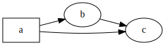
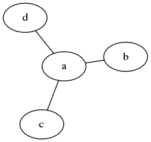

This plugin eases the inclusion of Graphs using the Graphiz tools (dot, ...).
The Graphviz tools must be installed to use this plugin.
Usage:
$ stog --package stog.dot ...
This plugin adds a new base rule <dot>. Here are the possible ways to use it:
| Code | Result |
|---|---|
Output to graph1.svg, using an <img>
node to show the image:
<dot outfile="graph1.svg">digraph g {
rankdir = LR;
a [ shape="box" ] ;
a -> b; a -> c ; b -> c ;
}</dot>
<dot outfile="graph1.svg">digraph g { rankdir = LR; a [ shape="box" ] ; a -> b; a -> c ; b -> c ; }</dot> |
 |
Output a png file to graph2.png,
use neato instead of dot in
the command and read source from graph.dot:
<dot command="neato"
src="graph.dot" type="png" outfile="graph2.png"/>
<dot command="neato" src="graph.dot" type="png" outfile="graph2.png"/>With graph.dot:
graph g { a -- b ; a -- c ; a -- d ; } |
 |
|
With <doc-...> rules to get links and labels,
using attribute defer_="1" in the <dot>
so that rewriting is performed in its children before the
code is being passed to dot:
<dot defer_="1">
digraph g {
rankdir = LR;
plugins -> asy ;
plugins -> dot ;
plugins [ href="<doc-url doc-path="plugins"/>" ]
asy [
href="<doc-url doc-path="plugins/asy"/>",
label="<doc-title doc-path="plugins/asy"/>" ] ;
dot [ href="<doc-url doc-path="plugins/dot"/>" ] ;
}</dot>
<dot defer_="1"> digraph g { rankdir = LR; plugins -> asy ; plugins -> dot ; plugins [ href="<doc-url doc-path="plugins"/>" ] asy [ href="<doc-url doc-path="plugins/asy"/>", label="<doc-title doc-path="plugins/asy"/>" ] ; dot [ href="<doc-url doc-path="plugins/dot"/>" ] ; }</dot>Since no outfile attribute is given, the svg
file produced is included (no use of <img>).
|
The node labels are clickable and the links are generated (and so valid) by Stog: |
Including again the produced svg file. To avoid
conflicts in ids, we use the prefix-svg-ids="foo"
attribute:
<dot prefix-svg-ids="foo">digraph g {
rankdir = LR;
a [ shape="box" ] ;
a -> b; a -> c ; b -> c ;
}</dot>
<dot prefix-svg-ids="foo">digraph g { rankdir = LR; a [ shape="box" ] ; a -> b; a -> c ; b -> c ; }</dot> |
|
The contents of the args attribute is used
as additional argument to the command which is run:
<dot prefix-svg-ids="bar" args="-Nshape=box">
digraph g {
rankdir = LR;
a -> b; a -> c ; b -> c ;
}</dot>
<dot prefix-svg-ids="bar" args="-Nshape=box"> digraph g { rankdir = LR; a -> b; a -> c ; b -> c ; }</dot> |